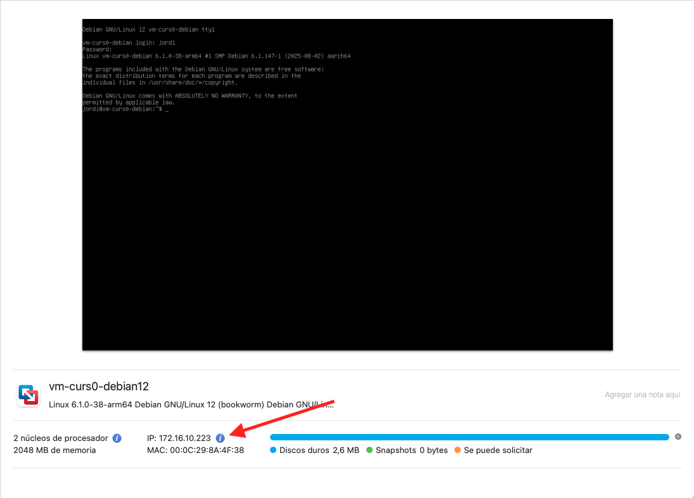
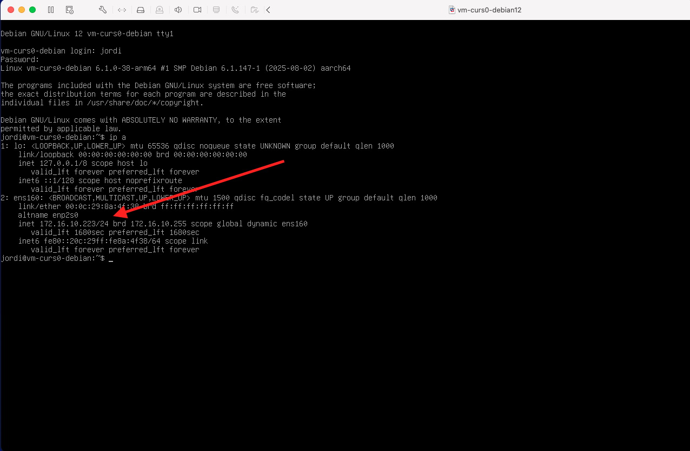
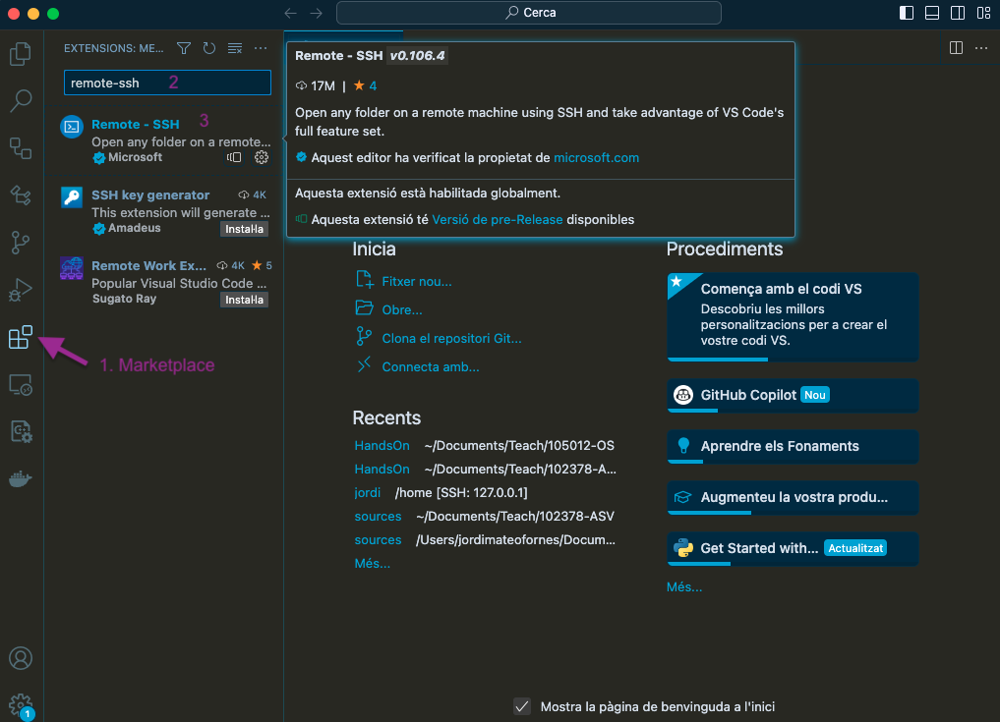
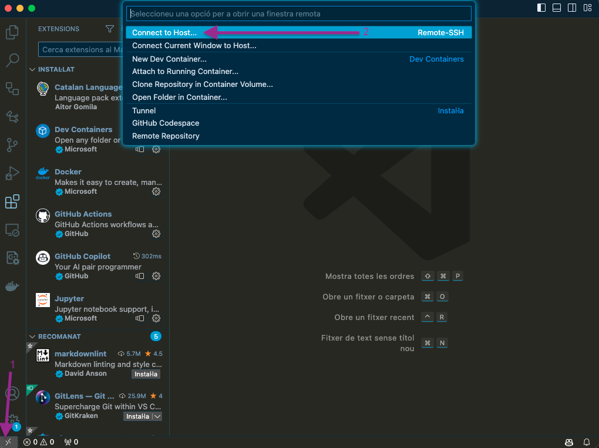
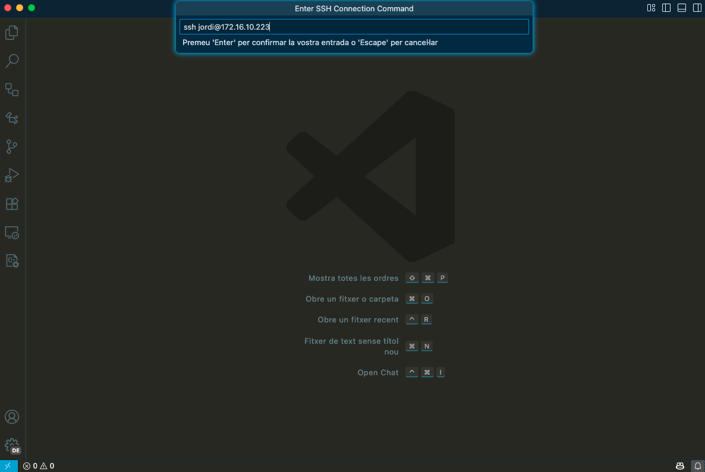
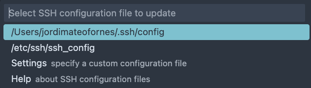
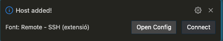
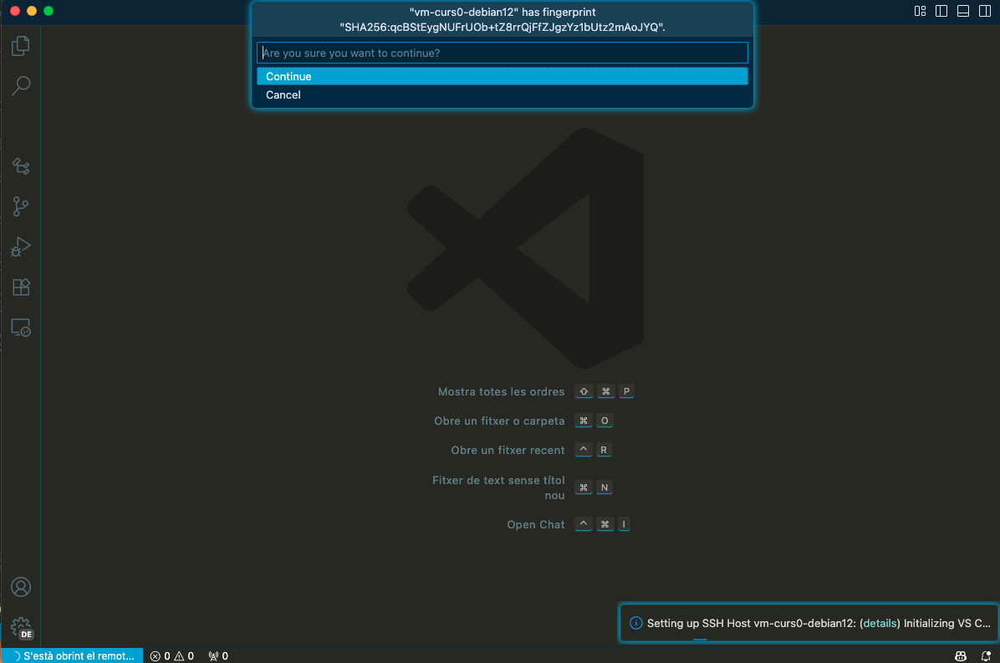
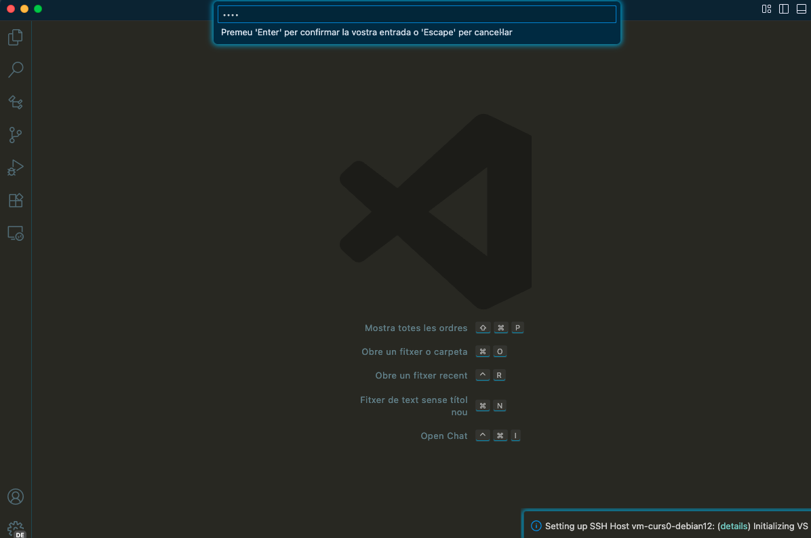
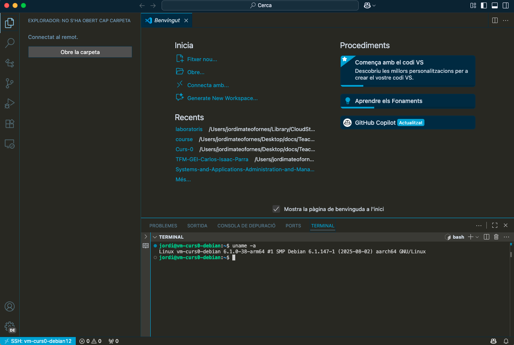

Laboratori 2: Configurant el meu entorn de desenvolupament amb VSCode
Objectius
- Configurar el Visual Studio Code (VSCode) per connectar-se a la màquina virtual mitjançant SSH.
Requisits previs
- Màquina virtual en funcionament (vegeu Laboratori 1).
- Visual Studio Code (VSCode) instal·lat al vostre ordinador. Podeu descarregar-lo des de https://code.visualstudio.com/.
- Obtenir la IP de la màquina virtual. Per fer-ho, podeu:
- Consultar la informació a VMWare: 
- O bé, iniciar sessió a la màquina virtual i executar la comanda
ip aper obtenir la IP: 
NotaEn els dos casos, la IP de la màquina virtual és 172.16.10.223.
Configurant VSCode per connectar-se a la màquina virtual
Un cop hagueu instal·lat el vostre entorn de desenvolupament (IDE), podeu afegir les següents extensions utilitzant el marketplace de VSCode: remote-ssh. Primer, feu clic a Marketplace (1), després cerqueu remote-ssh i, finalment, feu clic a (3) per instal·lar la extensió. Consulteu la imatge:

Un cop hagueu instal·lat la extensió, ja podeu connectar-vos a la màquina virtual. Per fer-ho, feu clic a la icona de la part inferior esquerra (1) i seleccioneu l’opció Remote-SSH: Connect to Host… (2). Consulteu la imatge:

Ara apareixerà una finestra on podreu escriure la connexió SSH. També veureu l’opció Add a New SSH Host. Feu clic en aquesta opció i introduïu la comanda SSH per connectar-vos a la màquina virtual. Consulteu la imatge:

Seleccioneu la primera opció del menú desplegable amb la ruta del vostre usuari i feu clic a Add. Consulteu la imatge:

i comproveu que l’amfitrió s’ha afegit correctament.

Ara feu clic a Open Config i observeu que s’ha creat una nova entrada amb el vostre usuari i la IP de la màquina virtual:
Host 172.16.10.223
HostName 172.16.10.223
User jordiUs recomano que modifiqueu el fitxer de configuració perquè sigui més fàcil de recordar. Per exemple, podeu canviar el nom de l’amfitrió per vm-curs0-debian12 :
Host vm-curs0-debian12
HostName 172.16.10.202
User jordiUn cop hagueu modificat el fitxer de configuració, guardem-lo i tanquem-lo. Ara ja podeu connectar-vos a la màquina virtual vm-curs0-debian12. Per fer-ho:
- Feu clic a la icona de la part inferior esquerra.
- Seleccioneu Remote-SSH: Connect to Host….
- Seleccioneu vm-curs0-debian12:
- Us apareixerà una finestra emergent que us demanarà si voleu confiar en l’amfitrió. Feu clic a Continue. 
- Us apareixerà una altra finestra emergent que us demanarà la contrasenya de l’usuari jordi. 
La primera vegada que us connecteu a la màquina virtual, VSCode instal·larà el servidor remot a la màquina virtual. Això pot trigar uns minuts.
Un cop us hàgiu connectat, veureu que la finestra de VSCode ha canviat i que ara esteu treballant a la màquina virtual. Podeu comprovar-ho a la part inferior esquerra on apareix el nom de l’amfitrió vm-curs0-debian12.

Per comprovar que tot funciona correctament, podeu obrir una terminal integrada a VSCode i executar la comanda uname -a per veure la informació del sistema i comprovar que esteu a la màquina virtual.
